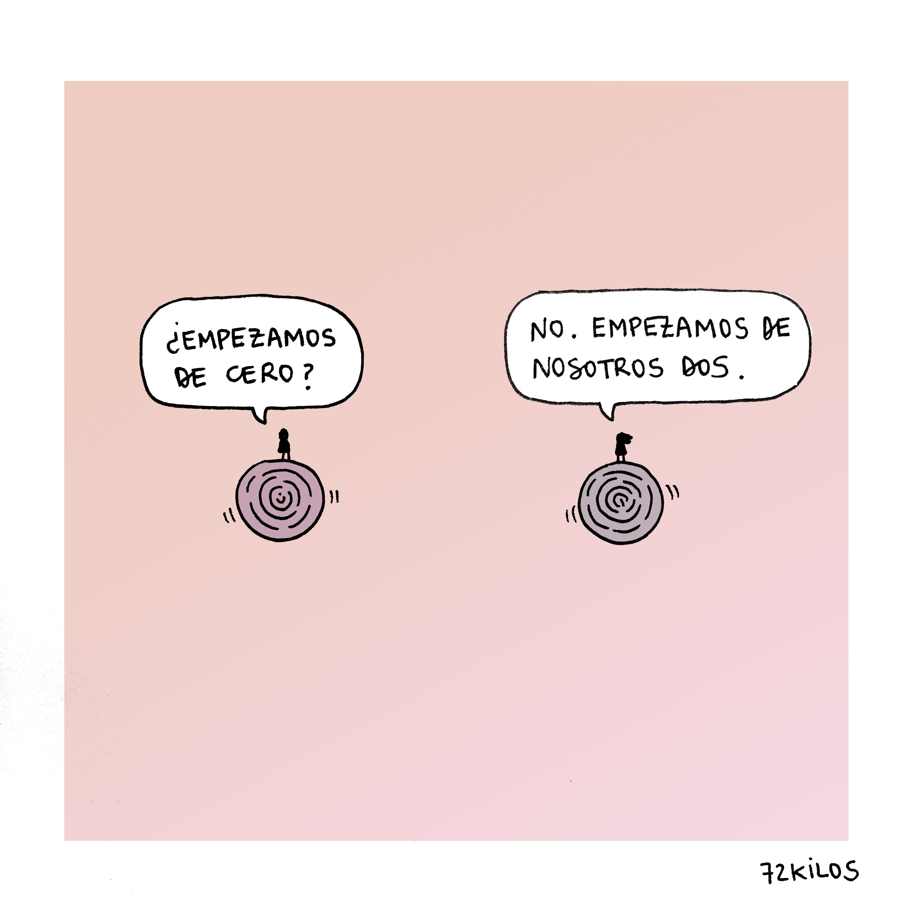

No sabes lo dentro que te llevaba. Y lo dentro que quería que me llevases.
El tiempo para leer siempre es tiempo robado (al igual que el tiempo para escribir, por otra parte, o el tiempo para amar).
¿Robado a qué? Digamos que al deber de vivir.
El tiempo para leer, al igual que el tiempo para amar, dilata el tiempo para vivir.
La lectura no depende de la organización del tiempo social; es, como el amor una manera de ser
Hemos sobrevivido. Tú y yo. Y los que sobreviven tienen un deber que cumplir, que es seguir viviendo hasta el final
La cultura y el amor vienen sin garantías. Nadie asegura que si amamos nos amarán, ni que leyendo libros nos volveremos más sabios. Pero no intentarlo es de locos.
No sucede nada, no temas.
Sólo es el tiempo.
Nos ha pasado
como una exhalación
y hemos tenido que arrimarnos un poco
al arcén. Pero
ya contábamos con eso.
Mira, la noche (allí enfrente,
esperando) aún está lejos.
Ven,
salgamos fuera.
Todavía
nos queda mucho
atardecer.
-Karmelo Iribarren
